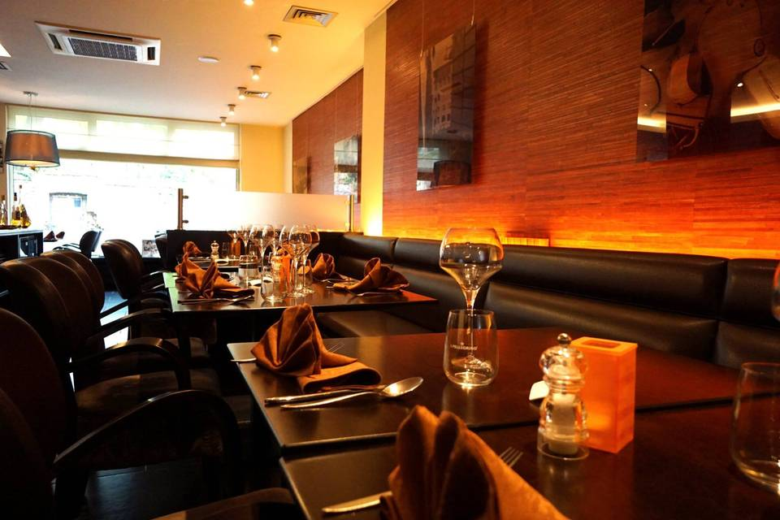
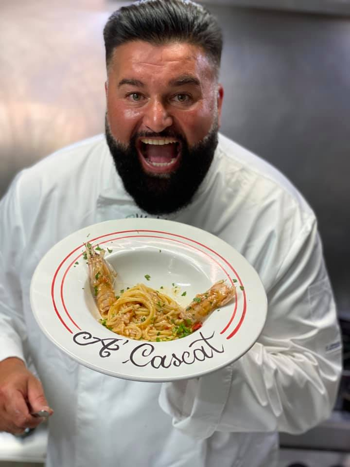
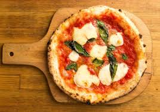
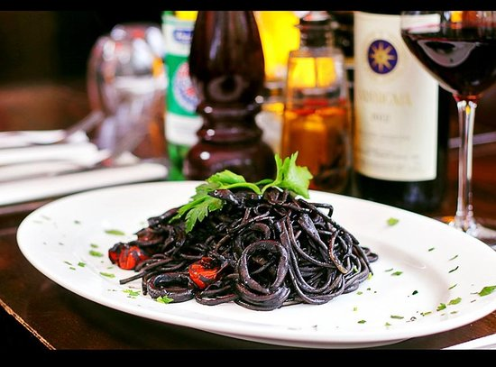
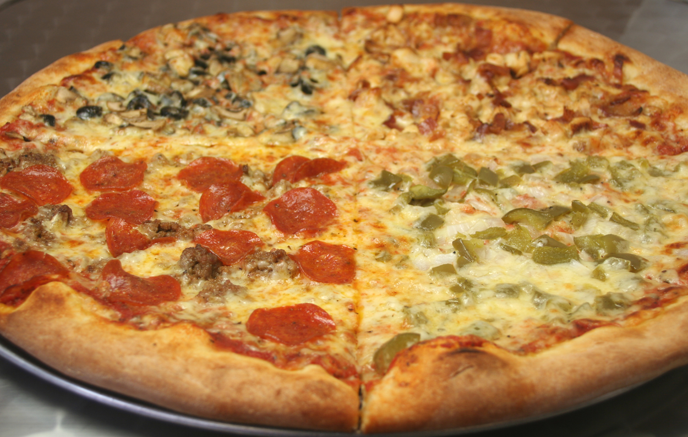
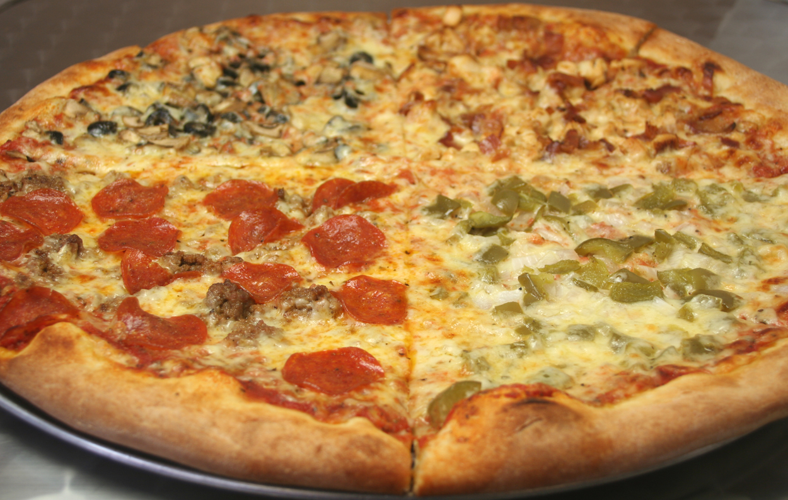

BIENVENUE AU Di Napoli
Tourné vers la mer et la Bonne Mère,
le Restaurant Di Napoli est idéalement situé sur le
Vieux-Port de bizerte

Le restaurant
Di Napoli
Tourné vers la mer et la Bonne Mère, le Restaurant Miramar est idéalement situé sur le Vieux-Port de Marseille. C’est un haut lieu de la gastronomie de la ville.On y découvre une cuisine fraîche et ensoleillée où le chef privilégie des saveurs basées sur les goûts de son enfance.
Mais on y vient surtout pour y déguster « La Vraie Bouillabaisse », l’une des meilleures de la cité phocéenne, dont la recette n’a jamais variée au fil du temps.

le chef
Ciro Salatiello
Christian Buffa est Marseillais, d’origine Italienne et Corse.
Enfant du quartier, il passe son enfance à proximité du Vieux-Port : la crèche des Moulins, l’école primaire de l’Evêché, la montée des Accoules.
Il traverse ensuite la Canebière et intègre le collège et le lycée Thiers où il obtient son baccalauréat C.
Il continue ses études avec une prépa HEC à Luminy suivie d’un DUT de gestion des entreprises et administrations à Saint-Jérôme.

notre specialite
La pizza napolitaine
Il n’est pas possible de normaliser la cuisine.
En effet, il s’agit d’un art où le tour de main du Chef fait la réussite d’une recette.
Cependant, la Bouillabaisse, spécialité marseillaise par excellence, comporte des ingrédients bien précis qu’il importe d’utiliser, si l’on veut respecter la tradition et ne pas tromper le client.
Cette charte a donc pour objet, tout en respectant l’art du professionnel, de préciser les éléments d’une Bouillabaisse de qualité, en vue de promouvoir ce plat régional auprès de la clientèle.

decouvrez
la carte
Préférer cuire à la vapeur, en papillote ou au bain-marie, chercher la légèreté, particulièrement dans les sauces, travailler les produits, choisis par les chefs eux-mêmes au marché, juste avant de les servir, adapter les menus précisément en fonction du choix du marché, utiliser les épices par petites touches pour faire ressortir le goût du produit qu’elles accompagnent, soigner enfin la présentation et l’aspect des mets, tels sont quelques unes des caractéristiques de ce mouvement culinaire révolutionnaire.


 
